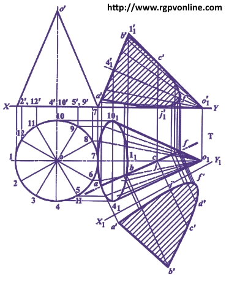

Que . 17 : A cone diameter of base 60 mm and axis 70 mm long is lying on HP on one of it's generators with its axis parallel to VP. A vertical cutting plane parallel to generator which is tangent to the ellipse for the base in top view, cuts the cone bisecting the axis and removing the portion containing apex. Draw its sectional front view and true shape of section.
एक कोन, जिसका base diameter 60 mm और axis 70 mm है, अपने एक generator पर जमीन (HP) पर लेटा हुआ है और उसकी axis V.P के समानांतर है। एक vertical cutting plane, जो generator से parallel है और top view में base के ellipse से tangent है, cone को दो बराबर भागों में काटता है और जिस भाग में apex है उसे हटा दिया गया है। इस कोन का sectional front view a true shape of section draw कीजिए।
Answer :
(i) Draw initial top view and front view of cone, assuming its base on H.P. and axis perpendicular to H.P. Divide base circle in top view in 12 equal parts and project these points on front view on XY.
(ii) Tilt initial front view, so that the cone is lying on H.P. (XY) on one of its generators. Project corresponding top view.
(ii) Draw H.T. of section plane in top view parallel to the generator o41 (which is tangent to the ellipse of the base).

(iv) Mark points of intersection of H.T. with generators of cone and project these points in front view to get sectional front view.
(v) Project true shape of the section on the auxiliary plane X1 Y1 parallel to H.T.